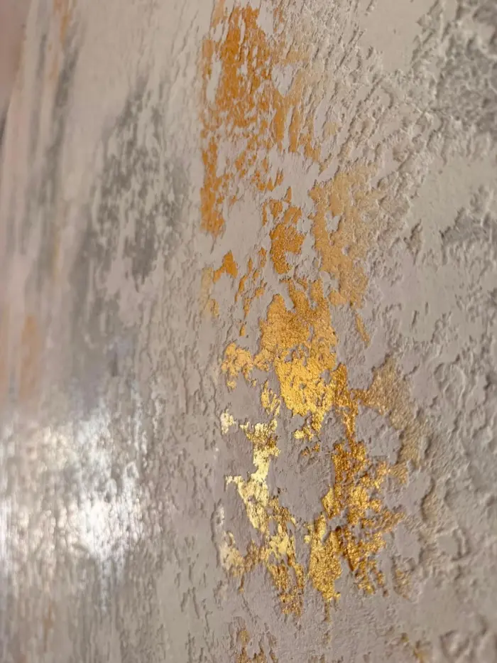
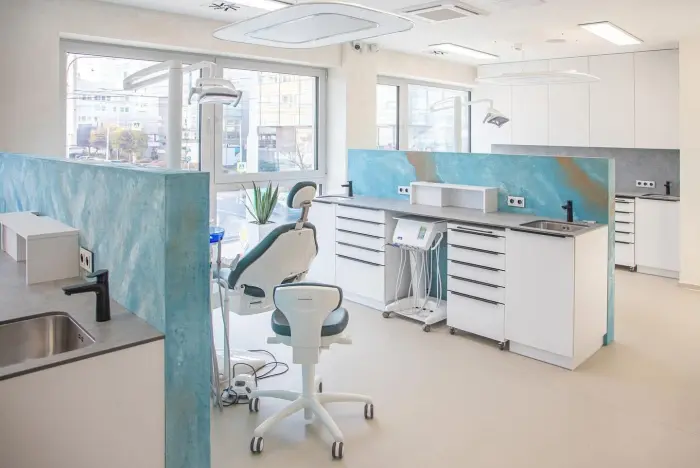

Dekorativní stěrky1 fotografieTři Mistři / Brno a okolí
Dekorativní malování stěn v Brně.
Stěna, která vypadá jako beton, kámen nebo štuk. Poradíme s výběrem techniky, připravíme podklad a stěrku naneseme ručně. Přijdou pokaždé stejní lidé a po práci uklidíme.
Pošlete fotku stěny a svou představu a do 24 hodin se vám ozveme. Nacenění je zdarma a nezávazné. Termín, který domluvíme, dodržíme.
5,0 / 529 recenzí na Google ↗
Náš tým má přes 15 let praxe v oboru

01 / Ukázky realizací
Podívejte se na výsledek.


02 / O službě
Proč stěrku s Tři Mistry
Dekorativní stěrka je ruční práce a výsledek dělá zkušenost. Pomůžeme vybrat techniku, která se hodí do vašeho prostoru, a stěrku uděláme tak, aby dlouho vypadala dobře.
Poradíme s výběrem
Betonová stěrka, benátský štuk, marmorino nebo travertino. Pomůžeme vybrat techniku, barvu i kresbu, která sedne k vašemu interiéru.
Stěrka i do koupelny
Betonovou stěrku děláme i do koupelen. Vhodnost ověříme podle podkladu a zatížení vodou, přes obklady nabízíme mikrocement.
Stejní lidé, čistá práce
Kdo si s vámi stěrku domluví, ten ji i udělá. Okolí zakryjeme a po práci uklidíme.
Jak probíhá realizace
- 01
Společně vybereme vzhled
Probereme barvu, strukturu a techniku, která se hodí do vašeho prostoru.
- 02
Zkontrolujeme stěnu
Ověříme rovinnost a soudržnost podkladu. Určíme, jakou přípravu potřebuje.
- 03
Naneseme stěrku
Stěrku naneseme ve vrstvách a ručně vytvoříme požadovanou kresbu.
- 04
Dokončíme detaily
Dokončíme rohy a napojení. Probereme, jak o hotový povrch pečovat.
Cena a časté otázky
Kolik stojí dekorativní nebo betonová stěrka?
Cena závisí na ploše, stavu a rovinnosti podkladu, zvolené technice a prostředí. Benátský štuk je pracnější než betonová stěrka. Pošlete fotku stěny a přibližné rozměry a připravíme nezávaznou cenu.
Jak vybrat betonovou stěrku nebo benátský štuk?
Betonový efekt, benátský štuk, marmorino a travertino mají rozdílnou kresbu a strukturu. Projdeme s vámi inspiraci a vybereme techniku podle světla, okolních materiálů a využití místnosti. Každý ručně zpracovaný povrch má vlastní kresbu.
Hodí se betonová stěrka do koupelny?
Záleží na podkladu a kontaktu s vodou. Vhodnost pro sprchový kout a další mokré zóny posoudíme individuálně. Pro stěrku přes vhodné obklady nabízíme také mikrocement.
Jde stěrka udělat přes obklady?
Přes vhodné obklady nabízíme mikrocement. Jestli je podklad vhodný, posoudíme podle fotek nebo na místě.
Jak dlouho stěrka trvá?
Stěrka se nanáší ve více vrstvách a každá musí zaschnout. Přesnou délku práce potvrdíme spolu s cenou podle plochy a techniky.
Jak se o stěrku starat?
Při předání vysvětlíme, jak hotový povrch čistit a čemu se vyhnout, aby dlouho vypadal dobře.
Kde stěrky děláte?
V celém Brně a okolí do zhruba 20 km, například v Modřicích, Šlapanicích, Kuřimi, Rosicích nebo Slavkově u Brna.
★★★★★
Naprostá spokojenost!
Jaroslav HloušekRecenze na Googlevčera
★★★★★
Moc rádi doporučujeme Honzu a Davida! 😊 Dělali nám doma výmalbu a stěrku a s výsledkem jsme opravdu moc spokojení. Oba jsou šikovní, pečliví a je vidět, že své práci rozumí. Co jsme ale ocenili snad úplně nejvíc – na čem jsme se domluvili, to vždy platilo. Přijeli, kdy řekli, dodrželi vše, co jsme si řekli, a celá spolupráce byla naprosto bez problémů. A musím říct, že právě tohle mi v dnešní době přijde skoro jako vzácnost. 😊 Kluci jsou navíc příjemní a spolehliví, takže za nás opravdu velká spokojenost. Určitě bychom se na ně obrátili znovu a můžeme je s čistým svědomím doporučit dál.
Hodnocení ceny: Rozumná cenaJiři KomínkováRecenze na Googlepřed 3 dny
★★★★★
S realizací betonové stěrky na našem krbu jsme maximálně spokojeni. Práce byla odvedena naprosto precizně, detaily a rohy jsou dotažené k dokonalosti. Krb teď vypadá luxusně a stal se dominantou celého obývacího pokoje. Firmu Tři Mistři i pana řemeslníka Honzu mohu pro jeho profesionalitu a smysl pro detail všem vřele doporučit! 👍
Hodnocení ceny: Rozumná cenaOksana FialovaRecenze na Googlepřed 5 dny
★★★★★
Výborná práce a skvělá komunikace.
Hodnocení ceny: Skvělá cenaDávid MikletičRecenze na Googlepřed týdnem
★★★★★
Perfektní rychlost domluvy i samotné realizace výmalby. Byt předán v čistém stavu, vše krásně zapravené, děkujeme.
Hodnocení ceny: Rozumná cenaLibor ZnebejanekRecenze na Googlepřed týdnem
★★★★★
Firmu mohu doporučit. Jsou to příjemní, pečliví a spolehliví řemeslníci.
Vlasta ZitnanskaRecenze na Googlepřed týdnem
★★★★★
Skvělá zkušenost s touto firmou při realizaci dekoračních stěrek. Borci odvedli perfektní a hlavně čistou práci. Se vším poradili a výsledek vypadá opravdu moc hezky. Oceňuji skvělou komunikaci a dodržení termínu. Určitě doporučuji.
Hodnocení ceny: Rozumná cenanicolasRecenze na Googlepřed 4 týdny
★★★★★
Velice spolehlivý a šikovní kluci, kteří odvádí skvělou práci. Jednoznačně doporučuji. Umí skvěle i tapety.
Jan MazuchRecenze na Googlepřed 3 měsíci
★★★★★
S pány mám skvělou zkušenost. Krásně nám v rámci rekonstrukce vymalovali byt. V ložnici na naše přání udělali nádhernou malířskou stěrku. Všem doporučuji!
Petr JelinekRecenze na Googlepřed 3 měsíci
★★★★★
Musím chlapy pochválit, malovali nám celý dům a na část dělali stěrku, odvedli kvalitně a velmi zodpovědně práci. Super rychlost, pečlivost a samozřejmě si po sobě uklidili.
Michaela Němcová NovotnáRecenze na Googlepřed 3 měsíci
★★★★★
Rád bych touto cestou poděkoval za dlouhodobě skvělé služby. Tuto firmu jsem na malování využil již několikrát a vždy jsem byl nadmíru spokojen. Kombinace profesionálního přístupu, stoprocentní kvality a velmi příznivé ceny je v dnešní době vzácná.
Martin KudrmáčekRecenze na Googlepřed 3 měsíci
★★★★★
Skvělá spolupráce od začátku do konce. Rychlá a bezproblémová domluva, spolehlivý přístup a kvalitně odvedená práce. Jednalo se již o naši opakovanou spolupráci a opět jsme byli maximálně spokojeni.
Lenka KratkaRecenze na Googlepřed 3 měsíci
★★★★★
Výborná zkušenost a spolupráce. Kvalitně a precizně odvedená práce, včetně úklidu po malování prostor v OZP Brno.
Dana BaláčováRecenze na Googlepřed 2 měsíci
★★★★★
Skvěle odvedená práce, výborná komunikace, spolehlivost. Provedené práce, nové omítky, výmalba, stěrka. Všechno proběhlo podle našich přání. Můžu doporučit.
Jitka DobrovolnáRecenze na Googlepřed 3 měsíci
★★★★★
Perfektni prace 👍 doporucuji
Pavel NyklRecenze na Googlepřed 2 měsíci
★★★★★
Rychlé jednání, příjemné vystupování a skvěle odvedená práce. Jsou to Mistři 🙂
Pavel PonešRecenze na Googlepřed měsícem
★★★★★
Vše proběhlo podle dohody, kvalitní práce, velmi pohodová parta, co odvede svoji práci.
Michal BinkaRecenze na Googlepřed 2 týdny
★★★★★
Profesně i lidsky skvěle odvedená práce. Všechno perfektní. Předáno čisté a poklizené. Děkuji!
Anna S.Recenze na Googlepřed 3 měsíci
★★★★★
S touto firmou máme jen ty nejlepší zkušenosti. Nejprve nám realizovali malby a dekorativní stěrky v práci a díky skvěle odvedené práci jsme je bez váhání oslovili i pro náš domov. Ve všech případech odvedli precizní práci, dodrželi domluvené termíny.
Raluk007Recenze na Googlepřed 3 měsíci
★★★★★
Výborná a čistá práce, absolutní spokojenost.
Radim MatelaRecenze na Googlepřed 3 měsíci
★★★★★
Zakázka zahrnovala umytí a následný nátěr fasády RD. Pánové odvedli profesionální práci. Byli velmi pečliví a ochotní. S provedením zakázky jsme spokojeni.
Bronislav HýblRecenze na Googlepřed 2 měsíci
★★★★★
S panem Honzou jsem byl velmi spokojený. Dostal jsem na něj kontakt na doporučení a nezklamal. Výborná domluva a vždy vyšel vstříc. Za ty peníze to stojí!
Kryštof JeřábekRecenze na Googlepřed 2 měsíci
★★★★★
Kvalitní provedení vyborná domluva.👍
Richard DvořáčekRecenze na Googlepřed 2 měsíci
★★★★★
Velice spokojení.Pánové byli moc šikovní..
David SudakRecenze na Googlepřed 2 měsíci
★★★★★
Moc děkujeme za spolupráci velmi spokojeni
Iva KošíkováRecenze na Googlepřed 3 měsíci
★★★★★
Spolehliví, rychle a kvalitně odvedená práce.👍
Lenka MelnikovaRecenze na Googlepřed měsícem
★★★★★
Chceme moc poděkovat za skvělou práci! Rychlost, výborná domluva a hlavně krásný výsledek! Určitě se na tuto firmu znovu obrátím :)
Veronika PlavcováRecenze na Googlepřed měsícem
★★★★★
Potřeboval jsem zapravit otvory v sádrokartonu a vymalovat kuchyň a koupelnu. Mile mě překvapila samostatnost, smysl pro detail i časová flexibilita.
Vít Starý NovotnýRecenze na Googlepřed měsícem
★★★★★
Tři Mistry můžu opravdu doporučit. Už od prvního kontaktu jsem měla velmi dobrý dojem a samotná realizace moje očekávání ještě předčila. Kluci byli ochotní, pečliví a nic nebyl problém. Odvedli precizní a skvělou práci na všem, na čem jsme se domluvili, také splnili. S výsledkem výmalby a oprav zdí jsem moc spokojená a určitě se na Tři Mistry v budoucnu znovu obrátím. Můžu je jen doporučit.
Radika CRecenze na Googlepřed měsícem
Cena stěrky
Kolik stojí betonová nebo dekorativní stěrka?
Cenu počítáme podle skutečné plochy a zvolené techniky. Zakrytí, příprava podkladu i úklid jsou v ceně, kterou vám předem potvrdíme. Žádné skryté položky.
- Plocha a tvar stěnyKolik metrů čtverečních a kolik rohů a detailů.
- Stav podkladuRovinnost a soudržnost stěny, případné opravy.
- Technika a efektBetonová stěrka, benátský štuk, marmorino nebo travertino.
- ProstředíObývák, kuchyň nebo koupelna se zatížením vodou.
Kde pracujeme
Stěrky v Brně a okolí do 20 km
- Žabovřesky
- Královo Pole
- Líšeň
- Bystrc
- Bohunice
- Židenice
- Komín
- Starý Lískovec
- Střed
- Modřice
- Šlapanice
- Kuřim
- Rosice
- Slavkov u Brna
04 / Nezávazná poptávka
Pojďme se domluvit.
Pošlete nám stručné zadání. Probereme možnosti a připravíme nabídku podle skutečného rozsahu práce.
Pro první domluvu stačí:
fotografie stěny nebo prostoru, přibližná plocha v m², inspirace, struktura a barevnost.
Nezávazná poptávka
Řekněte nám, co potřebujete
Stručně popište práci a případně přiložte fotky. Ozveme se vám do 24 hodin.